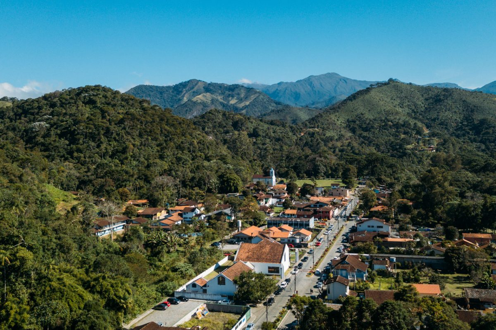

Visconde de Mauá
Visconde de Mauá é atribuído ao conjunto das vilas de Mauá, Maringá e Maromba, e seus diversos vales, como o Vale das Cruzes, Alcantilado, Pavão e Grama. A região como um todo compreende parte dos municípios de Resende e Itatiaia, no estado do Rio de Janeiro, e Bocaina de Minas, em Minas Gerais. As vilas ficam, em média, a 40 quilômetros das sedes desses municípios.Assim como toda região da Serra da Mantiqueira, possui diversas cachoeiras e uma paisagem exuberante.Tem cerca de seis mil habitantes. A principal atividade econômica da região é o turismo, com mais de 100 estabelecimentos de hospedagem e dezenas de restaurantes, alguns especializados em trutas e receitas à base de pinhão.
